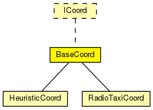

This documentation is released under the Creative Commons license
This documentation is released under the Creative Commons license(no description)

The following diagram shows usage relationships between types. Unresolved types are missing from the diagram.
The following diagram shows inheritance relationships for this type. Unresolved types are missing from the diagram.
| Name | Type | Description |
|---|---|---|
| HeuristicCoord | simple module | (no description) |
| RadioTaxiCoord | simple module | (no description) |
| Name | Value | Description |
|---|---|---|
| display | i=block/cogwheel_s |
| Name | Type | Unit |
|---|---|---|
| tripEfficiencyRatio | double | |
| waitingTime | double | |
| actualTripTime | double | |
| tripDistance | double |
| Name | Title | Source | Record | Unit | Interpolation Mode |
|---|---|---|---|---|---|
| tripEfficiencyRatio | Trip Efficiency Ratio | vector, mean, max | none | ||
| waitingTime | Waiting time | vector, mean, max | minute | none | |
| actualTripTime | Actual Trip Time | vector, mean, max | minute | none | |
| tripDistance | Trip Distance | vector, mean, max | km | none |
simple BaseCoord like ICoord { parameters: @display("i=block/cogwheel_s"); @signal[waitingTime](type="double"); @signal[actualTripTime](type="double"); @signal[tripEfficiencyRatio](type="double"); @signal[tripDistance](type="double"); @statistic[waitingTime](title="Waiting time"; unit=minute; record=vector,mean,max; interpolationmode=none); @statistic[actualTripTime](title="Actual Trip Time"; unit=minute; record=vector,mean,max; interpolationmode=none); @statistic[tripEfficiencyRatio](title="Trip Efficiency Ratio"; record=vector,mean,max; interpolationmode=none); @statistic[tripDistance](title="Trip Distance"; unit=km; record=vector,mean,max; interpolationmode=none); }
This documentation is released under the Creative Commons license